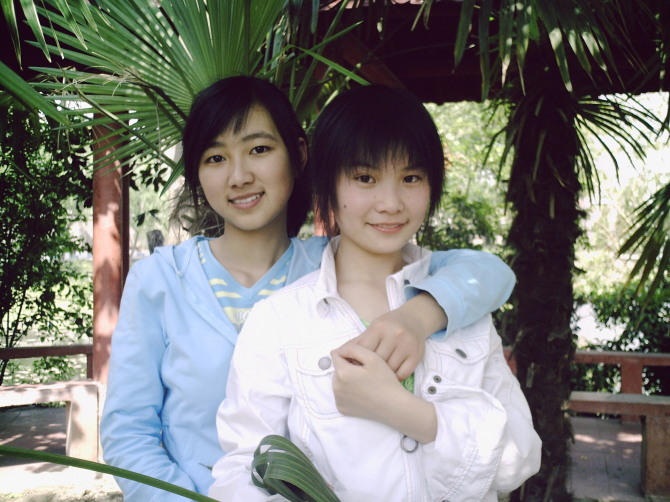
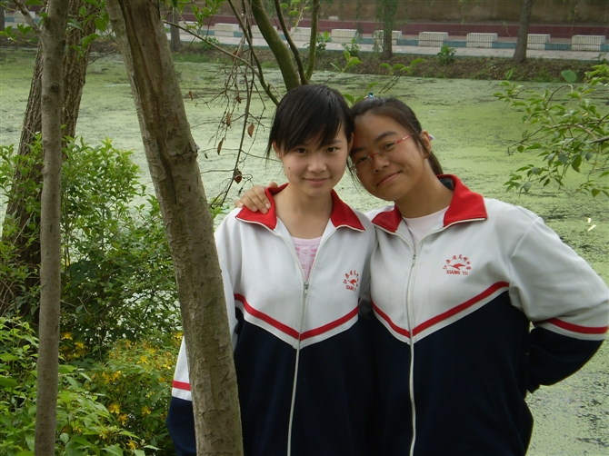
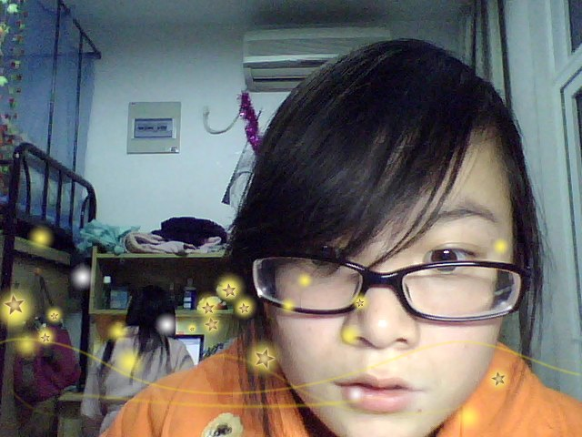

- Home
- Love
初遇
高一开学，第一次见，那时还都不熟悉！只是见到娇小可爱的你！
Read more
相识
高一下学期，渐渐的熟悉，晚自习的时候还写过小纸条，开始喜欢你！
Read more

分班
分班了，我们不再能天天见面，那时我已经喜欢上你，却不敢太靠近！
Read more

高考
高三，浑浑噩噩，每天唯一期待的事情，就是站在阳台上等你出现！
Read more
大一
上大学了，你在常州，我在无锡，偷偷摸摸打听到你的号码！
Read more

大二
大二了，听说你有男朋友了，你把我拉黑了，不再联系！
Read more
毕业
大三，还是想知道你的消息，用陌生号码呼叫，不敢说话！
Read more
培训
毕业了，迷茫，JAVA培训的时候，光棍节，你失恋了，陪你聊天！
Read more
工作
工作了，月薪不够吃饭，看不清未来的路，想要靠近，却没勇气追你！
Read more
努力
为了生活，努力学习技术，又逢光棍节，跟你视频时候见到你男朋友，假装祝福！
Read more
出差
出差杭州，再见你已结婚，看见你那样快乐，试着渐渐放下，不再打扰！
Read more
忘却
喜欢你第十个年头了，从懵懂到必须面对婚姻，不再挂念，谨以此纪念青春！
Read more